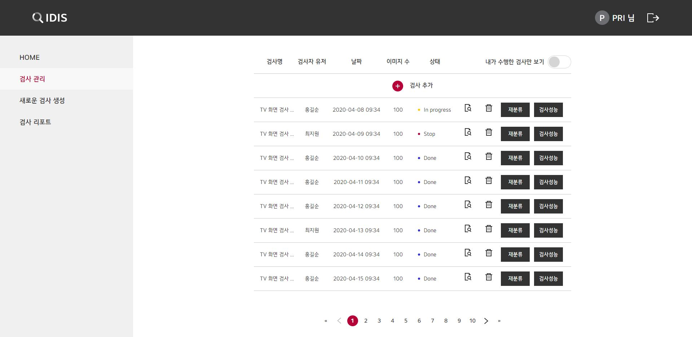
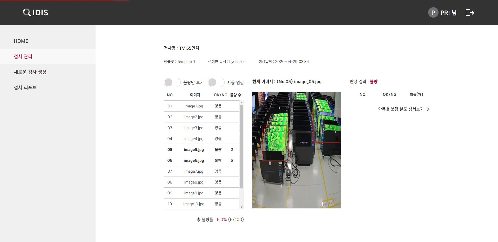

amoeba
LG 모니터 화면검사 자동화 시스템
불량 모니터를 검사하고 기록하는 시스템을 구현했습니다. gulp 활용해 scss 로 작업을 진행했으며, mixin 을 활용하여 수정하는 데 있어 효율성을 높였습니다. git을 이용해서 개발한 페이지를 개발자와 공유하며 프로젝트 진행했습니다.
HTML / CSS / JAVASCRIPT
- 마크업 및 스타일 코드 작성
- 애니메이션(모션) 및 인터렉션 구현

